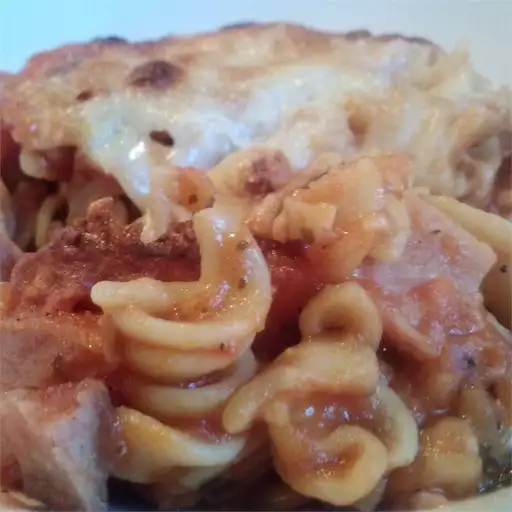

Ham and Cheese Pasta Bake

Description
Not what you may be thinking, this is NOT ham mac n' cheese! This is just a
simply wonderfully SIMPLE baked pasta dish with tasty ham instead of the usual
boring hamburger or sausage.
Ingredients:
- 1 (16 ounce) package rotini pasta
- 1 (26 ounce) jar onion and garlic spaghetti sauce
- 1 pound thickly sliced honey baked ham, cut into 1/2 inch cubes
- 1 teaspoon minced garlic
- 1 teaspoon black pepper
- ½ teaspoon onion powder
- 2 cups shredded mozzarella cheese
- ¼ cup grated Parmesan cheese
Steps:
- Preheat oven to 425 degrees F (220 degrees C).
-
In a large bowl, combine dry pasta, spaghetti sauce, ham, garlic, onion
powder and pepper. Fill sauce jar with water, and pour over mixture. Mix
well, and spoon into 9x13 inch casserole dish. Cover tightly with foil.
-
Bake in preheated oven for 35 minutes. Carefully remove foil, then sprinkle
with mozzarella and Parmesan cheese. Bake for 5 minutes, or until cheese is
melted.